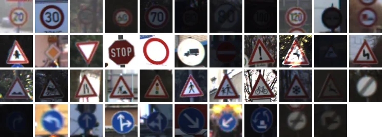
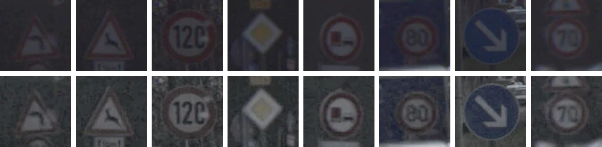
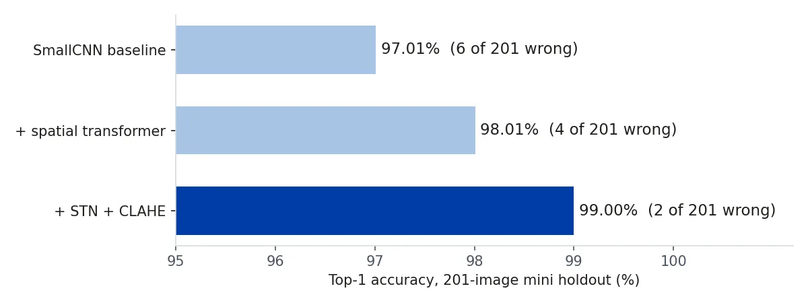
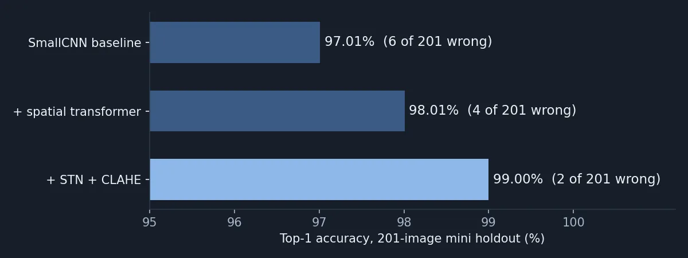

Small, dark, tilted photos of 43 kinds of sign. Preprocessing aimed at those failure modes did more than bigger networks, and grouped validation kept the numbers honest.
- Top-1 accuracy
- 99.0%on a 201-image holdout (2 errors)
- Holdout errors
- 6 → 2from baseline to final model
- Sign classes
- 43from speed limits to roundabouts
- Training images
- 39,209all models trained from scratch

The problem
The task was to classify photos of German traffic signs into 43 classes, from speed limits to yield and roundabout signs. Many images are small, blurry, tilted or nearly black, the conditions a real camera faces. The final score was top-1 accuracy on a labeled 201-image mini holdout. We also wanted validation numbers we could trust, which turned out to be the harder problem.
The data
We used the German Traffic Sign Recognition Benchmark (GTSRB): 39,209 training images at 100×100 pixels across 43 classes. The classes are imbalanced, from 210 to 2,250 images each. The key detail is how the images were collected. Each physical sign was filmed as a track of 30 consecutive frames, so the 39,209 images come from only 1,307 real signs. Neighboring frames are nearly identical, and that shapes how validation has to work.
Our approach
We wrote the training pipeline in PyTorch. The main model is a small CNN: three blocks of paired 3×3 convolutions with batch norm, global average pooling and dropout. We also trained ResNet-18 and MobileNetV3-Small from scratch, not fine-tuned from pretrained weights.
Two additions targeted the data’s weaknesses. A spatial transformer network learns to straighten and crop each sign before classifying it, and starts from an identity transform. CLAHE contrast equalization, which we implemented in NumPy on the brightness channel only, recovers dark images while keeping their colors.

Validation used grouped splits, so all 30 frames of a sign land on the same side. Training used AdamW, cosine learning-rate decay, mixed precision, early stopping and checkpointing on a university GPU cluster. We used AI coding assistance (Claude Code) to build the pipeline.
Results
Each addition helped the small CNN at 48×48 pixels. The baseline missed 6 of 201 holdout images, the spatial transformer cut that to 4, and CLAHE cut it to 2, for 99.0% top-1 accuracy. Larger backbones did worse here: ResNet-18 peaked at 97.01% and MobileNetV3-Small at 89.55%. Soft-vote ensembles never beat the best single model.
| Model | Input | Validation | Holdout top-1 | Errors / 201 |
|---|---|---|---|---|
| SmallCNN baseline | 48 | 99.20% | 97.01% | 6 |
| + spatial transformer | 48 | 99.14% | 98.01% | 4 |
| + spatial transformer + CLAHE | 48 | — | 99.00% | 2 |
| ResNet-18 + STN + CLAHE | 100 | — | 97.01% | 6 |
| MobileNetV3-Small + STN | 64 | 91.12% | 89.55% | 21 |
| SmallCNN, random split (leaky) | 100 | 99.95% | 99.50% | 1 |


What we learned
A validation split can lie. With random per-image splits, near-duplicate frames of the same sign appeared on both sides, and validation accuracy reached 99.95–99.97%. Grouping by physical sign brought it down to a more honest 98.5–99.6% or so for the CNN and ResNet models.
Preprocessing aimed at real failure modes, such as tilt and darkness, did more than bigger networks did. A small CNN with the right inputs beat ResNet-18 trained from scratch on this dataset. Some images stayed out of reach: one nearly black 120 km/h sign was misread as 80 km/h by every model and ensemble we built.
Team, tools and code
Team NorthWind
- Caleb Dilley
- Dallin Wagner
- Jonathan Oliphant
- Nels Buhrley
A team project for CSE 450 Machine Learning at BYU-Idaho, Spring 2026.
Source: Source on GitHub · Team project site